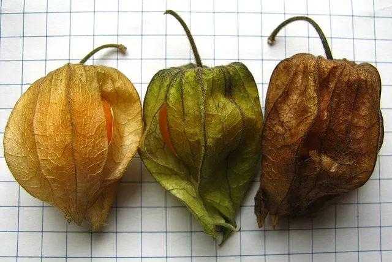

Sauces, preserves & sides
Ground cherry salsa
Ground cherry salsa is made with wild ground cherry.

How do you make ground cherry salsa?
Ripe ground cherries with chilli, onion and lime.
Wild ingredients
- Ground cherry (Physalis heterophylla): in season July to September
Watch the recipe

Video: Celebrating Appalachia on YouTube